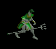
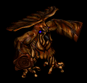
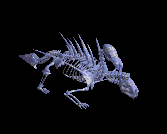
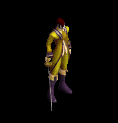
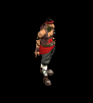
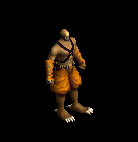
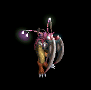
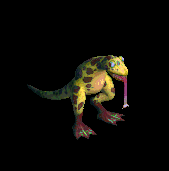
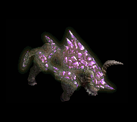
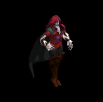

お菓子 をドロップするmob一覧
一覧ページへ
※イベント が該当。
| リビングデッド | アンデット | 一般1 | ||||||
|---|---|---|---|---|---|---|---|---|
 | 投擲(410) | 牙(270) | イベント(410) | 腰(230) | 爪(210) | 帰還(160) | 双剣(270) | |
| グール | アンデット | 一般2 | ||||||
 | 投擲(380) | スリング(250) | イベント(380) | 足(210) | 爪(190) | 帰還(150) | ||
| ゾンビ | アンデット | 一般3 | ||||||
 | 投擲(360) | 牙(240) | イベント(360) | 兜・帽子(200) | 爪(180) | 帰還(140) | 双剣(240) | |
| バンシー | アンデット | セミ1 | ||||||
 | 笛(390) | 翼(260) | イベント(390) | マント(220) | イヤリング(200) | ブローチ(180) | 水晶(260) | |
| ヴァンパイア | アンデット | 一般3 | ||||||
 | 鞭(360) | 牙(240) | イベント(360) | 職業鎧(200) | 指輪(180) | 特殊1(140) | 双剣(240) | |
| 上級ヴァンパイア | アンデット | セミ1 | ||||||
 | 鞭(390) | 笛(260) | イベント(390) | 職業鎧(220) | 指輪(200) | 特殊1(160) | ||
| 死霊魔術師 | アンデット | セミ1 | ||||||
 | 杖(390) | 翼(260) | イベント(390) | グローブ(220) | 冠(200) | ブローチ(200) | 本(390) | 水晶(260) |
| ブラックエルフ | 人間 | ボス1 | ||||||
 | 弓(470) | 片手剣(310) | イベント(470) | グローブ(260) | 手首(240) | 腕刺青(190) | クロー(310) | 銃(470) |
| シーフ | 人間 | 一般1 | ||||||
 | 投擲(410) | ステッキ(270) | イベント(410) | 職業鎧(230) | 指輪(210) | 特殊1(160) | ||
| レッドアイ信奉者 | 人間 | 一般1 | ||||||
 | 笛(410) | 牙(270) | イベント(410) | 鎧(230) | 槍投擲機(210) | 十字架(50) | 双剣(270) | |
| 原人 | 人間 | 一般2 | ||||||
 | 笛(380) | 牙(250) | イベント(380) | グローブ(210) | 槍投擲機(190) | 十字架(60) | 双剣(250) | |
| 堕落魔法師 | 人間 | 一般3 | ||||||
 | 杖(360) | スリング(240) | イベント(360) | マント(200) | 首(180) | 能力向上2(140) | 本(360) | |
| コートナイト | 人間 | 一般3 | ||||||
 | 槍(360) | 両手剣(240) | イベント(360) | 兜・帽子(200) | 手首(180) | 十字架(130) | 鎌(240) | 箒(360) |
| リザードマン | 悪魔 | 一般1 | ||||||
|  | 槍(410) | 両手剣(270) | イベント(410) | 鎧(230) | 槍投擲機(210) | 肩刺青(90) | 鎌(270) | 箒(410) |
| リザードウォリア | 悪魔 | 一般2 | ||||||
 | 槍(380) | 両手剣(250) | イベント(380) | 鎧(210) | 槍投擲機(190) | 肩刺青(100) | 鎌(250) | 箒(380) |
| リザードキリング | 悪魔 | 一般3 | ||||||
 | 槍(360) | 両手剣(240) | イベント(360) | 鎧(200) | 槍投擲機(180) | 肩刺青(110) | 鎌(240) | 箒(360) |
| ナーガファイター | 悪魔 | セミ1 | ||||||
 | 槍(390) | 両手剣(260) | イベント(390) | 鎧(220) | 槍投擲機(200) | 肩刺青(120) | 鎌(260) | 箒(390) |
| ナーガスフィア | 悪魔 | ボス1 | ||||||
 | 槍(470) | 両手剣(310) | イベント(470) | グローブ(260) | 槍投擲機(240) | 肩刺青(130) | 鎌(310) | 箒(470) |
| リザードライダー | 悪魔 | 一般2 | ||||||
 | スリング(380) | 槍(250) | イベント(380) | 職業鎧(210) | 首(190) | 能力向上2(150) | 箒(250) | |
| リザードチャージ | 悪魔 | 一般3 | ||||||
 | ステッキ(360) | 槍(240) | イベント(360) | 職業鎧(200) | 首(180) | 能力向上2(140) | 箒(240) | |
| オーガ | 悪魔 | 一般3 | ||||||
 | 鈍器(360) | 杖(240) | イベント(360) | 鎧(200) | イヤリング(180) | 能力向上1(140) | 本(240) | |
| 蟲 | 動物 | 一般1 | ||||||
 | 鈍器(410) | スリング(270) | イベント(410) | マント(230) | 冠(210) | 帰還(160) | ||
| リーチ | 動物 | 一般2 | ||||||
 | 鈍器(380) | 片手剣(250) | イベント(380) | マント(210) | 冠(190) | 帰還(150) | クロー(250) | |
| マゴット | 動物 | 一般3 | ||||||
 | 鈍器(360) | スリング(240) | イベント(360) | マント(200) | 冠(180) | 帰還(140) | ||
| クローラー | 動物 | 一般4 | ||||||
 | 鈍器(300) | 片手剣(200) | イベント(300) | マント(170) | 冠(150) | 帰還(120) | クロー(200) | |
| クリーパー | 動物 | セミ1 | ||||||
 | 鈍器(390) | スリング(260) | イベント(390) | マント(220) | 冠(200) | 帰還(160) | ||
| 蟲の群れ | 動物 | 一般1 | ||||||
 | 笛(410) | 翼(270) | イベント(410) | グローブ(230) | イヤリング(210) | 帰還(160) | 水晶(270) | |
| 鋏昆虫の群れ | 動物 | 一般2 | ||||||
 | 笛(380) | 翼(250) | イベント(380) | 腰(210) | 首(190) | 帰還(150) | 水晶(250) | |
| 殺人蚊の群れ | 動物 | 一般3 | ||||||
 | 笛(360) | 翼(240) | イベント(360) | 足(200) | イヤリング(180) | 帰還(140) | 水晶(240) | |
| イナゴの群れ | 動物 | セミ1 | ||||||
 | 笛(390) | 翼(260) | イベント(390) | 兜・帽子(220) | 首(200) | 帰還(160) | 水晶(260) | |
| ディザースター | 動物 | ボス1 | ||||||
 | 笛(470) | 翼(310) | イベント(470) | マント(260) | イヤリング(240) | 帰還(190) | 水晶(310) | |
| リビングデッドEx | アンデット | 一般1 | ||||||
| 投擲(410) | 牙(270) | イベント(410) | 腰(230) | 爪(210) | 帰還(160) | 双剣(270) | |
| グールEx | アンデット | 一般2 | ||||||
| 投擲(380) | スリング(250) | イベント(380) | 足(210) | 爪(190) | 帰還(150) | ||
| ゾンビEx | アンデット | 一般3 | ||||||
| 投擲(360) | 牙(240) | イベント(360) | 兜・帽子(200) | 爪(180) | 帰還(140) | 双剣(240) | |
| バンシーEx | アンデット | セミ1 | ||||||
| 笛(450) | 翼(300) | イベント(450) | マント(250) | イヤリング(230) | ブローチ(180) | 水晶(300) | |
| ヴァンパイアEx | アンデット | 一般3 | ||||||
| 鞭(360) | 牙(240) | イベント(360) | 職業鎧(200) | 指輪(180) | ブローチ(200) | 双剣(240) | |
| 上級ヴァンパイアEx | アンデット | セミ1 | ||||||
| 鞭(450) | 笛(300) | イベント(450) | 職業鎧(250) | 指輪(230) | ブローチ(250) | ||
| 死霊魔術師Ex | アンデット | セミ1 | ||||||
| 杖(450) | 翼(300) | イベント(450) | グローブ(250) | 冠(230) | 宝石(180) | 本(450) | 水晶(300) |
| ブラックエルフEx | 人間 | ボス1 | ||||||
| 弓(1200) | 片手剣(800) | イベント(1200) | グローブ(670) | 手首(600) | 腕刺青(190) | クロー(800) | 銃(1200) |
| シーフEx | 人間 | 一般1 | ||||||
| 投擲(410) | ステッキ(270) | イベント(410) | 職業鎧(230) | 指輪(210) | 特殊1(160) | ||
| レッドアイ信奉者Ex | 人間 | 一般1 | ||||||
| 笛(410) | 牙(270) | イベント(410) | 鎧(230) | 槍投擲機(210) | 十字架(50) | 双剣(270) | |
| 原人Ex | 人間 | 一般2 | ||||||
| 笛(380) | 牙(250) | イベント(380) | グローブ(210) | 槍投擲機(190) | 十字架(60) | 双剣(250) | |
| 堕落魔法師Ex | 人間 | 一般3 | ||||||
| 杖(360) | スリング(240) | イベント(360) | マント(200) | 首(180) | 能力向上2(140) | 本(360) | |
| コートナイトEx | 人間 | 一般3 | ||||||
| 槍(360) | 両手剣(240) | イベント(360) | 兜・帽子(200) | 手首(180) | 十字架(130) | 鎌(240) | 箒(360) |
| リザードマンEx | 悪魔 | 一般1 | ||||||
| 槍(410) | 両手剣(270) | イベント(410) | 鎧(230) | 槍投擲機(210) | 肩刺青(90) | 鎌(270) | 箒(410) | |
| リザードウォリアEx | 悪魔 | 一般2 | ||||||
| 槍(380) | 両手剣(250) | イベント(380) | 鎧(210) | 槍投擲機(190) | 肩刺青(100) | 鎌(250) | 箒(380) |
| キラーリザードEx | 悪魔 | 一般3 | ||||||
| 槍(360) | 両手剣(240) | イベント(360) | 鎧(200) | 槍投擲機(180) | 肩刺青(110) | 鎌(240) | 箒(360) |
| ナーガファイタEx | 悪魔 | セミ1 | ||||||
| 槍(450) | 両手剣(300) | イベント(450) | 鎧(250) | 槍投擲機(230) | 肩刺青(120) | 鎌(300) | 箒(450) |
| ナーガスフィアEx | 悪魔 | ボス1 | ||||||
| 槍(1200) | 両手剣(800) | イベント(1200) | グローブ(670) | 槍投擲機(600) | 肩刺青(130) | 鎌(800) | 箒(1200) |
| リザードライダーEx | 悪魔 | 一般2 | ||||||
| スリング(380) | 槍(250) | イベント(380) | 職業鎧(210) | 首(190) | 能力向上2(150) | 箒(250) | |
| リザードチャージEx | 悪魔 | 一般3 | ||||||
| ステッキ(360) | 槍(240) | イベント(360) | 職業鎧(200) | 首(180) | 能力向上2(140) | 箒(240) | |
| オーガEx | 悪魔 | 一般3 | ||||||
| 鈍器(360) | 杖(240) | イベント(360) | 鎧(200) | イヤリング(180) | 能力向上1(140) | 本(240) | |
| ワームEx | 動物 | 一般1 | ||||||
| 鈍器(410) | スリング(270) | イベント(410) | マント(230) | 冠(210) | 帰還(160) | ||
| リーチEx | 動物 | 一般2 | ||||||
| 鈍器(380) | 片手剣(250) | イベント(380) | マント(210) | 冠(190) | 帰還(150) | クロー(250) | |
| マゴットEx | 動物 | 一般3 | ||||||
| 鈍器(360) | スリング(240) | イベント(360) | マント(200) | 冠(180) | 帰還(140) | ||
| クローラーEx | 動物 | 一般4 | ||||||
| 鈍器(300) | 片手剣(200) | イベント(300) | マント(170) | 冠(150) | 帰還(120) | クロー(200) | |
| クリーパーEx | 動物 | セミ1 | ||||||
| 鈍器(450) | スリング(300) | イベント(450) | マント(250) | 冠(230) | 帰還(180) | ||
| 蟲の群れEx | 動物 | 一般1 | ||||||
| 笛(410) | 翼(270) | イベント(410) | グローブ(230) | イヤリング(210) | 帰還(160) | 水晶(270) | |
| 鋏昆虫の群れEx | 動物 | 一般2 | ||||||
| 笛(380) | 翼(250) | イベント(380) | 腰(210) | 首(190) | 帰還(150) | 水晶(250) | |
| 殺人蚊の群れEx | 動物 | 一般3 | ||||||
| 笛(360) | 翼(240) | イベント(360) | 足(200) | イヤリング(180) | 帰還(140) | 水晶(240) | |
| イナゴの群れEx | 動物 | セミ1 | ||||||
| 笛(450) | 翼(300) | イベント(450) | 兜・帽子(250) | 首(230) | 帰還(180) | 水晶(300) | |
| ディザースターEx | 動物 | ボス1 | ||||||
| 笛(1200) | 翼(800) | イベント(1200) | マント(670) | イヤリング(600) | 帰還(480) | 水晶(800) | |
| オクトパストンEx | 神獣 | 一般1 | ||||||
 | 投擲(410) | 牙(270) | イベント(410) | マント(230) | 首(210) | 肩刺青(170) | 双剣(270) | |
| 凍破Ex | 神獣 | 一般2 | ||||||
 | 投擲(380) | 牙(250) | イベント(380) | マント(210) | 首(190) | 肩刺青(180) | 双剣(250) | |
| キャストアイEx | 神獣 | 一般3 | ||||||
 | 投擲(360) | 牙(240) | イベント(360) | マント(200) | 首(180) | 肩刺青(190) | 双剣(240) | |
| スノーツリーEx | 神獣 | セミ1 | ||||||
 | 投擲(450) | 牙(300) | イベント(450) | マント(250) | 首(230) | 肩刺青(200) | 双剣(300) | |
| サーリビラエEx | 神獣 | ボス1 | ||||||
 | 投擲(1200) | 牙(800) | イベント(1200) | マント(670) | 首(600) | 肩刺青(210) | 双剣(800) | |
| メロウEx | 神獣 | 一般3 | ||||||
 | 鈍器(360) | 片手剣(240) | イベント(360) | 鎧(200) | イヤリング(180) | 肩刺青(120) | クロー(240) | |
| マーマンEx | 神獣 | 一般4 | ||||||
 | 鈍器(300) | 片手剣(200) | イベント(300) | 鎧(170) | イヤリング(150) | 肩刺青(130) | クロー(200) | |
| マーマンファイタEx | 神獣 | セミ2 | ||||||
 | 鈍器(650) | 片手剣(430) | イベント(650) | 鎧(360) | イヤリング(330) | 肩刺青(140) | クロー(430) | |
| トランクマンEx | 神獣 | 一般3 | ||||||
|  | 杖(360) | 鞭(240) | イベント(360) | 腰(200) | 指輪(180) | 能力向上1(140) | 本(360) | |
| リビングデッドZin | アンデット | 一般1 | ||||||
| 投擲(1210) | 牙(810) | イベント(1210) | 腰(670) | 爪(610) | 帰還(480) | 双剣(810) | |
| グールZin | アンデット | 一般2 | ||||||
| 投擲(1380) | スリング(920) | イベント(1380) | 足(770) | 爪(690) | 帰還(550) | ||
| ゾンビZin | アンデット | 一般3 | ||||||
| 投擲(1560) | 牙(1040) | イベント(1560) | 兜・帽子(870) | 爪(780) | 帰還(620) | 双剣(1040) | |
| バンシーZin | アンデット | セミ1 | ||||||
| 笛(650) | 翼(430) | イベント(650) | マント(360) | イヤリング(330) | ブローチ(180) | 水晶(430) | |
| ヴァンパイアZin | アンデット | 一般3 | ||||||
| 鞭(1560) | 牙(1040) | イベント(1560) | 職業鎧(870) | 指輪(780) | ブローチ(200) | 双剣(1040) | |
| 上級ヴァンパイアZin | アンデット | セミ1 | ||||||
| 鞭(650) | 笛(430) | イベント(650) | 職業鎧(360) | 指輪(330) | ブローチ(250) | ||
| 死霊魔術師Zin | アンデット | セミ1 | ||||||
| 杖(650) | 翼(430) | イベント(650) | グローブ(360) | 冠(330) | 宝石(260) | 本(650) | 水晶(430) |
| ブラックエルフZin | 人間 | ボス1 | ||||||
| 弓(1000) | 片手剣(670) | イベント(1000) | グローブ(560) | 手首(500) | 腕刺青(190) | クロー(670) | 銃(1000) |
| シーフZin | 人間 | 一般1 | ||||||
| 投擲(1210) | ステッキ(810) | イベント(1210) | 職業鎧(670) | 指輪(610) | 特殊1(480) | ||
| レッドアイ信奉者Zin | 人間 | 一般1 | ||||||
| 笛(1210) | 牙(810) | イベント(1210) | 鎧(670) | 槍投擲機(610) | 十字架(50) | 双剣(810) | |
| 原人Zin | 人間 | 一般2 | ||||||
| 笛(1380) | 牙(920) | イベント(1380) | グローブ(770) | 槍投擲機(690) | 十字架(60) | 双剣(920) | |
| 堕落魔法師Zin | 人間 | 一般3 | ||||||
| 杖(1560) | スリング(1040) | イベント(1560) | マント(870) | 首(780) | 能力向上2(620) | 本(1560) | |
| コートナイトZin | 人間 | 一般3 | ||||||
| 槍(1560) | 両手剣(1040) | イベント(1560) | 兜・帽子(870) | 手首(780) | 十字架(130) | 鎌(1040) | 箒(1560) |
| リザードマンZin | 悪魔 | 一般1 | ||||||
| 槍(1210) | 両手剣(810) | イベント(1210) | 鎧(670) | 槍投擲機(610) | 肩刺青(90) | 鎌(810) | 箒(1210) | |
| リザードウォリアZin | 悪魔 | 一般2 | ||||||
| 槍(1380) | 両手剣(920) | イベント(1380) | 鎧(770) | 槍投擲機(690) | 肩刺青(100) | 鎌(920) | 箒(1380) |
| リザードキリングZin | 悪魔 | 一般3 | ||||||
| 槍(1560) | 両手剣(1040) | イベント(1560) | 鎧(870) | 槍投擲機(780) | 肩刺青(110) | 鎌(1040) | 箒(1560) |
| ナーガファイターZin | 悪魔 | セミ1 | ||||||
| 槍(650) | 両手剣(430) | イベント(650) | 鎧(360) | 槍投擲機(330) | 肩刺青(120) | 鎌(430) | 箒(650) |
| ナーガスフィアZin | 悪魔 | ボス1 | ||||||
| 槍(1000) | 両手剣(670) | イベント(1000) | グローブ(560) | 槍投擲機(500) | 肩刺青(130) | 鎌(670) | 箒(1000) |
| リザードライダーZin | 悪魔 | 一般2 | ||||||
| スリング(1380) | 槍(920) | イベント(1380) | 職業鎧(770) | 首(690) | 能力向上2(550) | 箒(920) | |
| リザードチャージZin | 悪魔 | 一般3 | ||||||
| ステッキ(1560) | 槍(1040) | イベント(1560) | 職業鎧(870) | 首(780) | 能力向上2(620) | 箒(1040) | |
| オーガZin | 悪魔 | 一般3 | ||||||
| 鈍器(1560) | 杖(1040) | イベント(1560) | 鎧(870) | イヤリング(780) | 能力向上1(620) | 本(1040) | |
| 蟲Zin | 動物 | 一般1 | ||||||
| 鈍器(1210) | スリング(810) | イベント(1210) | マント(670) | 冠(610) | 帰還(480) | ||
| リーチZin | 動物 | 一般2 | ||||||
| 鈍器(1380) | 片手剣(920) | イベント(1380) | マント(770) | 冠(690) | 帰還(550) | クロー(920) | |
| マゴットZin | 動物 | 一般3 | ||||||
| 鈍器(1560) | スリング(1040) | イベント(1560) | マント(870) | 冠(780) | 帰還(620) | ||
| クローラーZin | 動物 | 一般4 | ||||||
| 鈍器(1200) | 片手剣(800) | イベント(1200) | マント(670) | 冠(600) | 帰還(480) | クロー(800) | |
| クリーパーZin | 動物 | セミ1 | ||||||
| 鈍器(650) | スリング(430) | イベント(650) | マント(360) | 冠(330) | 帰還(260) | ||
| 蟲の群れZin | 動物 | 一般1 | ||||||
| 笛(1210) | 翼(810) | イベント(1210) | グローブ(670) | イヤリング(610) | 帰還(480) | 水晶(810) | |
| 鋏昆虫の群れZin | 動物 | 一般2 | ||||||
| 笛(1380) | 翼(920) | イベント(1380) | 腰(770) | 首(690) | 帰還(550) | 水晶(920) | |
| 殺人蚊の群れZin | 動物 | 一般3 | ||||||
| 笛(1560) | 翼(1040) | イベント(1560) | 足(870) | イヤリング(780) | 帰還(620) | 水晶(1040) | |
| イナゴの群れZin | 動物 | セミ1 | ||||||
| 笛(650) | 翼(430) | イベント(650) | 兜・帽子(360) | 首(330) | 帰還(260) | 水晶(430) | |
| ディザースターZin | 動物 | ボス1 | ||||||
| 笛(1000) | 翼(670) | イベント(1000) | マント(560) | イヤリング(500) | 帰還(400) | 水晶(670) | |
| オクトパストンZin | 神獣 | 一般1 | ||||||
| 投擲(1210) | 牙(810) | イベント(1210) | マント(670) | 首(610) | 肩刺青(170) | 双剣(810) | |
| 凍破Zin | 神獣 | 一般2 | ||||||
| 投擲(1380) | 牙(920) | イベント(1380) | マント(770) | 首(690) | 肩刺青(180) | 双剣(920) | |
| キャストアイZin | 神獣 | 一般3 | ||||||
| 投擲(1560) | 牙(1040) | イベント(1560) | マント(870) | 首(780) | 肩刺青(190) | 双剣(1040) | |
| スノーツリーZin | 神獣 | セミ1 | ||||||
| 投擲(650) | 牙(430) | イベント(650) | マント(360) | 首(330) | 肩刺青(200) | 双剣(430) | |
| サーリビラエZin | 神獣 | ボス1 | ||||||
| 投擲(1000) | 牙(670) | イベント(1000) | マント(560) | 首(500) | 肩刺青(210) | 双剣(670) | |
| メロウZin | 神獣 | 一般3 | ||||||
| 鈍器(1560) | 片手剣(1040) | イベント(1560) | 鎧(870) | イヤリング(780) | 肩刺青(120) | クロー(1040) | |
| マーマンZin | 神獣 | 一般4 | ||||||
| 鈍器(1200) | 片手剣(800) | イベント(1200) | 鎧(670) | イヤリング(600) | 肩刺青(130) | クロー(800) | |
| マーマンファイタZin | 神獣 | セミ2 | ||||||
| 鈍器(750) | 片手剣(500) | イベント(750) | 鎧(420) | イヤリング(380) | 肩刺青(140) | クロー(500) | |
| トランクマンZin | 神獣 | 一般3 | ||||||
| 杖(1560) | 鞭(1040) | イベント(1560) | 腰(870) | 指輪(780) | 能力向上1(620) | 本(1560) | ||
| ジャイアント骸骨2 Zin | アンデット | セミ2 | ||||||
 | 能力向上2(80) | 職業鎧(140) | 牙(250) | 職業鎧(360) | ステッキ(470) | イベント(550) | 双剣(250) | |
| バイキングヘッド Zin | アンデット | 一般4 | ||||||
 | 鍵(30) | 鈍器(50) | 牙(90) | 職業鎧(130) | 状態異常回復1(170) | イベント(200) | 双剣(90) | |
| アンデッド魔法師3 Zin | アンデット | セミ2 | ||||||
 | 能力向上2(80) | マント(140) | cP回復(250) | 十字架(360) | 状態異常回復1(470) | イベント(550) | ||
| アンデッドライト1 Zin | アンデット | セミ1 | ||||||
 | 鍵(50) | 状態異常回復2(90) | 帰還(160) | cP回復(230) | 矢(300) | イベント(350) | 魔弾(300) | |
| アンデッドロック2 Zin | アンデット | ボス1 | ||||||
 | 指輪(150) | マント(250) | 弾(450) | マント(650) | 状態異常回復1(850) | イベント(1000) | ||
| ボーンキメラ1 Zin | アンデット | セミ1 | ||||||
|  | 能力向上2(50) | 状態異常回復2(90) | 帰還(160) | 能力向上2(230) | 槍投擲機(300) | イベント(350) | ||
| ブルーエリゲイト1 Zin | アンデット | セミ2 | ||||||
 | 宝石(80) | 首(140) | 牙(250) | 職業鎧(360) | 槍投擲機(470) | イベント(550) | 双剣(250) | |
| 装甲ボーンキメラ1 Zin | アンデット | セミ1 | ||||||
 | 片手剣(50) | 首(90) | 帰還(160) | 職業鎧(230) | 肩刺青(300) | イベント(350) | クロー(50) | |
| ハイエルフ1 Zin | 人間 | セミ1 | ||||||
|  | 片手剣(90) | イヤリング(260) | 帰還(180) | 槍(140) | 槍投擲機(40) | イベント(50) | クロー(90) | 箒(140) |
| ならず者3 Zin | 人間 | セミ2 | ||||||
 | 宝石(140) | 爪(410) | 宝石(280) | マント(220) | 肩刺青(60) | イベント(80) | ||
| 襲撃団3 Zin | 人間 | ボス2 | ||||||
 | 投擲(450) | 爪(1350) | 牙(900) | 鞭(720) | 両手剣(180) | イベント(270) | 鎌(180) | 双剣(900) |
| 格闘家 Zin | 人間 | セミ1 | ||||||
|  | 投擲(90) | 爪(260) | 牙(180) | マント(140) | 肩刺青(40) | イベント(50) | 双剣(180) | |
| シーク守護者1 Zin | 人間 | セミ1 | ||||||
 | 能力向上2(90) | 首(260) | スリング(180) | 手首(140) | 腰(40) | イベント(50) | ||
| シーク天使2 Zin | 人間 | セミ3 | ||||||
 | 鍵(180) | マント(530) | スリング(350) | 能力向上2(280) | 状態異常回復1(70) | イベント(110) | ||
| 逃亡魔法師4 Zin | 人間 | ボス1 | ||||||
 | 投擲(250) | ブローチ(750) | 両手剣(500) | 十字架(400) | ステッキ(100) | イベント(150) | 鎌(500) | |
| 逃亡ハンター3 Zin | 人間 | ボス1 | ||||||
 | 宝石(250) | 状態異常回復2(750) | 両手剣(500) | cP回復(400) | 鞭(100) | イベント(150) | 鎌(500) | |
| 狂魔(狂った悪魔…)3 Zin | 悪魔 | ボス1 | ||||||
|  | 片手剣(650) | ブローチ(800) | 腕刺青(330) | 鞭(200) | 矢(100) | イベント(50) | クロー(650) | 魔弾(100) |
| ゴールデンマスク4 Zin | 悪魔 | ボス3 | ||||||
 | 片手剣(1560) | 爪(1920) | cP回復(790) | 鞭(480) | 矢(240) | イベント(120) | クロー(1560) | 魔弾(240) |
| 剣闘士 Zin | 悪魔 | セミ1 | ||||||
 | 宝石(230) | 爪(280) | 腕刺青(120) | 能力向上1(70) | 矢(40) | イベント(20) | 魔弾(40) | |
| 死神2 Zin | 悪魔 | セミ3 | ||||||
 | 鍵(460) | 首(560) | cP回復(230) | 手首(140) | 弓(70) | イベント(40) | 銃(70) | |
| 邪臣3 Zin | 悪魔 | ボス2 | ||||||
 | 指輪(1170) | 職業鎧(1440) | 帰還(590) | 手首(360) | 杖(180) | イベント(90) | 本(180) | |
| 魔女1 Zin | 悪魔 | セミ1 | ||||||
 | 鎧(230) | ブローチ(280) | cP回復(120) | 笛(70) | ステッキ(40) | イベント(20) | ||
| パンタズドリーム2 Zin | 悪魔 | セミ3 | ||||||
 | 鎧(460) | イヤリング(560) | 足(230) | 笛(140) | 状態異常回復1(70) | イベント(40) | ||
| カマキリ戦士2 Zin | 悪魔 | ボス1 | ||||||
 | 鍵(650) | 鈍器(800) | 弾(330) | 槍(200) | 腰(100) | イベント(50) | 箒(200) | |
| ペンティライダー3 Zin | 悪魔 | ボス1 | ||||||
|  | 鍵(650) | 鈍器(800) | 帰還(330) | 槍(200) | 腰(100) | イベント(50) | 箒(200) | |
| パンプキンヘッド1 Zin | 悪魔 | セミ1 | ||||||
 | 指輪(230) | 首(280) | マント(120) | 笛(70) | 状態異常回復1(40) | イベント(20) | ||
| ジャックランタン Zin | 悪魔 | セミ1 | ||||||
 | 鍵(230) | 首(280) | 足(120) | 笛(70) | 状態異常回復1(40) | イベント(20) | ||
| エルダーパンプキン3 Zin | 悪魔 | ボス2 | ||||||
| 宝石(1170) | 首(1440) | 帰還(590) | 笛(360) | 肩刺青(180) | イベント(90) | |||
| ビッグモンキー1 Zin | 動物 | セミ1 | ||||||
 | 能力向上2(120) | ブローチ(90) | 腕刺青(70) | 職業鎧(50) | 状態異常回復1(40) | イベント(20) | ||
| マウンテン戦士 Zin | 動物 | 一般4 | ||||||
 | 冠(70) | イヤリング(50) | 牙(40) | 職業鎧(30) | 矢(20) | イベント(10) | 双剣(40) | 魔弾(20) |
| 蛙3 Zin | 動物 | ボス2 | ||||||
 | 両手剣(630) | 爪(450) | 帰還(360) | 能力向上1(270) | 肩刺青(180) | イベント(90) | 鎌(630) | |
| ラジエータカエル2 Zin | 動物 | ボス1 | ||||||
 | 投擲(350) | 爪(250) | 弾(200) | 十字架(150) | 状態異常回復1(100) | イベント(50) | ||
| カメレオン4 Zin | 動物 | ボス3 | ||||||
|  | 冠(840) | 鈍器(600) | 腕刺青(480) | 能力向上1(360) | 弓(240) | イベント(120) | 銃(240) | |
| 装甲亀2 Zin | 動物 | セミ3 | ||||||
 | 能力向上2(250) | ブローチ(180) | 帰還(140) | 能力向上1(110) | 弓(70) | イベント(40) | 銃(70) | |
| ダークバッファロ Zin | 神獣 | 一般3 | ||||||
 | 能力向上2(120) | 爪(170) | cP回復(90) | 能力向上1(10) | 腰(30) | イベント(70) | ||
| 赤パネルバッファ2 Zin | 神獣 | セミ3 | ||||||
 | 能力向上2(320) | 爪(460) | 帰還(250) | 鞭(40) | 腰(70) | イベント(180) | ||
| エメラルドバッファ1 Zin | 神獣 | セミ2 | ||||||
|  | 指輪(250) | 爪(360) | 弾(190) | 十字架(30) | 能力向上2(60) | イベント(140) | ||
| ユニコーン3 Zin | 神獣 | ボス2 | ||||||
 | 冠(810) | マント(1170) | 牙(630) | 槍(90) | cP回復(180) | イベント(450) | 箒(90) | 双剣(630) |
| ブルーウイング4 Zin | 神獣 | ボス3 | ||||||
 | 能力向上2(1080) | マント(1560) | 牙(840) | 十字架(120) | 弓(240) | イベント(600) | 双剣(840) | 銃(240) |
| 使徒3 Zin | 神獣 | ボス2 | ||||||
 | 鎧(810) | 鈍器(1170) | スリング(630) | 笛(90) | 矢(180) | イベント(450) | 魔弾(180) | |
| 審判官4 Zin | 神獣 | ボス3 | ||||||
 | 能力向上2(1080) | 鈍器(1560) | スリング(840) | 笛(120) | 矢(240) | イベント(600) | 魔弾(240) | |
| 堕天使3 Zin | 神獣 | ボス2 | ||||||
 | 鍵(810) | イヤリング(1170) | 弾(630) | 手首(90) | ステッキ(180) | イベント(450) | ||
| イーグルヘッド1 Zin | 神獣 | セミ2 | ||||||
 | 投擲(250) | イヤリング(360) | 腕刺青(190) | 十字架(30) | 肩刺青(60) | イベント(140) | ||
| ライオンヘッド Zin | 神獣 | セミ1 | ||||||
 | 投擲(160) | イヤリング(230) | cP回復(120) | 能力向上2(20) | ステッキ(40) | イベント(90) | ||
| スクリマー | アンデット | セミ1 | ||||||
| 笛(390) | 翼(260) | イベント(390) | マント(220) | イヤリング(200) | ブローチ(180) | 水晶(260) | |
| スクリマー Ex | アンデット | セミ1 | ||||||
| 笛(450) | 翼(300) | イベント(450) | マント(250) | イヤリング(230) | ブローチ(180) | 水晶(300) | |
| 堕落魔術師 | 人間 | 一般3 | ||||||
| 杖(360) | スリング(240) | イベント(360) | マント(200) | 首(180) | 能力向上2(140) | 本(360) | |
| 堕落魔術師 Ex | 人間 | 一般3 | ||||||
| 杖(360) | スリング(240) | イベント(360) | マント(200) | 首(180) | 能力向上2(140) | 本(360) | |
| ヴァンパイア | アンデット | 一般3 | ||||||
| 鞭(360) | 牙(240) | イベント(360) | 職業鎧(200) | 指輪(180) | 特殊1(140) | 双剣(240) | |
| ヴァンパイア男爵 | アンデット | セミ1 | ||||||
| 鞭(390) | 笛(260) | イベント(390) | 職業鎧(220) | 指輪(200) | 特殊1(160) | ||
| ヴァンパイア Ex | アンデット | 一般3 | ||||||
| 鞭(360) | 牙(240) | イベント(360) | 職業鎧(200) | 指輪(180) | ブローチ(200) | 双剣(240) | |
| ヴァンパイア男爵 Ex | アンデット | セミ1 | ||||||
| 鞭(450) | 笛(300) | イベント(450) | 職業鎧(250) | 指輪(230) | ブローチ(250) | ||
| 昆虫の大群 | 動物 | 一般2 | ||||||
| 笛(380) | 翼(250) | イベント(380) | 腰(210) | 首(190) | 帰還(150) | 水晶(250) | |
| 蚊の大群 | 動物 | 一般3 | ||||||
| 笛(360) | 翼(240) | イベント(360) | 足(200) | イヤリング(180) | 帰還(140) | 水晶(240) | |
| イナゴの大群 | 動物 | セミ1 | ||||||
| 笛(390) | 翼(260) | イベント(390) | 兜・帽子(220) | 首(200) | 帰還(160) | 水晶(260) | |
| 殺人昆虫の大群 | 動物 | ボス1 | ||||||
| 笛(470) | 翼(310) | イベント(470) | マント(260) | イヤリング(240) | 帰還(190) | 水晶(310) | |
| 昆虫の大群 Ex | 動物 | 一般2 | ||||||
| 笛(380) | 翼(250) | イベント(380) | 腰(210) | 首(190) | 帰還(150) | 水晶(250) | |
| 蚊の大群 Ex | 動物 | 一般3 | ||||||
| 笛(360) | 翼(240) | イベント(360) | 足(200) | イヤリング(180) | 帰還(140) | 水晶(240) | |
| イナゴの大群 Ex | 動物 | セミ1 | ||||||
| 笛(450) | 翼(300) | イベント(450) | 兜・帽子(250) | 首(230) | 帰還(180) | 水晶(300) | |
| 殺人昆虫の大群 Ex | 動物 | ボス1 | ||||||
| 笛(1200) | 翼(800) | イベント(1200) | マント(670) | イヤリング(600) | 帰還(480) | 水晶(800) | |
| オクトパス Ex | 神獣 | 一般1 | ||||||
| 投擲(410) | 牙(270) | イベント(410) | マント(230) | 首(210) | 肩刺青(170) | 双剣(270) | |
| コルダス Ex | 神獣 | 一般2 | ||||||
| 投擲(380) | 牙(250) | イベント(380) | マント(210) | 首(190) | 肩刺青(180) | 双剣(250) | |
| コールドアイ Ex | 神獣 | 一般3 | ||||||
| 投擲(360) | 牙(240) | イベント(360) | マント(200) | 首(180) | 肩刺青(190) | 双剣(240) | |
| フリーザー Ex | 神獣 | セミ1 | ||||||
| 投擲(450) | 牙(300) | イベント(450) | マント(250) | 首(230) | 肩刺青(200) | 双剣(300) | |
| クーラー Ex | 神獣 | ボス1 | ||||||
| 投擲(1200) | 牙(800) | イベント(1200) | マント(670) | 首(600) | 肩刺青(210) | 双剣(800) | |
| ブルーメロウ Ex | 神獣 | 一般3 | ||||||
| 鈍器(360) | 片手剣(240) | イベント(360) | 鎧(200) | イヤリング(180) | 肩刺青(120) | クロー(240) | |
| ブルーマーマン Ex | 神獣 | 一般4 | ||||||
| 鈍器(300) | 片手剣(200) | イベント(300) | 鎧(170) | イヤリング(150) | 肩刺青(130) | クロー(200) | |
| マーマンウォリア Ex | 神獣 | セミ2 | ||||||
| 鈍器(650) | 片手剣(430) | イベント(650) | 鎧(360) | イヤリング(330) | 肩刺青(140) | クロー(430) | |
| ゴルゴン Zin | 神獣 | 一般4 | ||||||
| 能力向上2(120) | 爪(170) | cP回復(90) | 能力向上1(10) | 腰(30) | イベント(70) | ||
| 時の苗木 Zin | 神獣 | セミ1 | ||||||
| 杖(1560) | 鞭(1040) | イベント(1560) | 腰(870) | 指輪(780) | 能力向上1(620) | 本(1560) | ||
| ダークアーチャー Zin | 人間 | ボス1 | ||||||
| 弓(1000) | 片手剣(670) | イベント(1000) | グローブ(560) | 手首(500) | 腕刺青(190) | クロー(670) | 銃(1000) |
| ゴルゴン Zin | 神獣 | 一般4 | ||||||
| 能力向上2(120) | 爪(170) | cP回復(90) | 能力向上1(10) | 腰(30) | イベント(70) | ||
| マゴットEv | 動物 | 一般3 | ||||||
| 鈍器(1560) | スリング(1040) | イベント(1560) | マント(870) | 冠(780) | 帰還(620) | ||
| ゾンビEv | アンデット | 一般3 | ||||||
| 投擲(1560) | 牙(1040) | イベント(1560) | 兜・帽子(870) | 爪(780) | 帰還(620) | 双剣(1040) | |
| オーガEv | 悪魔 | 一般3 | ||||||
| 鈍器(1560) | 杖(1040) | イベント(1560) | 鎧(870) | イヤリング(780) | 能力向上1(620) | 本(1040) | |
| リザードチャージEv | 悪魔 | 一般3 | ||||||
| ステッキ(1560) | 槍(1040) | イベント(1560) | 職業鎧(870) | 首(780) | 能力向上2(620) | 箒(1040) | |
| コートナイトEv | 人間 | 一般3 | ||||||
| 槍(1560) | 両手剣(1040) | イベント(1560) | 兜・帽子(870) | 手首(780) | 十字架(130) | 鎌(1040) | 箒(1560) |
| ヴァンパイアEv | アンデット | 一般3 | ||||||
| 鞭(1560) | 牙(1040) | イベント(1560) | 職業鎧(870) | 指輪(780) | ブローチ(200) | 双剣(1040) | |
| リザードキリングEv | 悪魔 | 一般3 | ||||||
| 槍(1560) | 両手剣(1040) | イベント(1560) | 鎧(870) | 槍投擲機(780) | 肩刺青(110) | 鎌(1040) | 箒(1560) |
| キャストアイEv | 神獣 | 一般3 | ||||||
| 投擲(1560) | 牙(1040) | イベント(1560) | マント(870) | 首(780) | 肩刺青(190) | 双剣(1040) | |
| 殺人蚊の群れEv | 動物 | 一般3 | ||||||
| 笛(1560) | 翼(1040) | イベント(1560) | 足(870) | イヤリング(780) | 帰還(620) | 水晶(1040) | |
| メロウEv | 神獣 | 一般3 | ||||||
| 鈍器(1560) | 片手剣(1040) | イベント(1560) | 鎧(870) | イヤリング(780) | 肩刺青(120) | クロー(1040) | |
| トランクマンEv | 神獣 | 一般3 | ||||||
| 杖(1560) | 鞭(1040) | イベント(1560) | 腰(870) | 指輪(780) | 能力向上1(620) | 本(1560) | ||
| 堕落魔法師Ev | 人間 | 一般3 | ||||||
| 杖(1560) | スリング(1040) | イベント(1560) | マント(870) | 首(780) | 能力向上2(620) | 本(1560) | |
| マーマンEv | 神獣 | 一般4 | ||||||
| 鈍器(1200) | 片手剣(800) | イベント(1200) | 鎧(670) | イヤリング(600) | 肩刺青(130) | クロー(800) | |
| クローラーEv | 動物 | 一般4 | ||||||
| 鈍器(1200) | 片手剣(800) | イベント(1200) | マント(670) | 冠(600) | 帰還(480) | クロー(800) | |
| バンシーEv | アンデット | セミ1 | ||||||
| 笛(650) | 翼(430) | イベント(650) | マント(360) | イヤリング(330) | ブローチ(180) | 水晶(430) | |
| アンデッドライトSp | アンデット | セミ1 | ||||||
 | 鍵(50) | 状態異常回復2(100) | 帰還(150) | cP回復(200) | 矢(300) | イベント(400) | 魔弾(300) | |
| ヴァンパイアSp | アンデット | 一般4 | ||||||
|  | 鞭(1500) | 牙(1000) | イベント(1500) | 職業鎧(900) | 指輪(800) | ブローチ(200) | 双剣(1000) | |
| リザードマンSp | 悪魔 | 一般4 | ||||||
| 槍(1210) | 両手剣(810) | イベント(1210) | 鎧(670) | 槍投擲機(610) | 肩刺青(90) | 鎌(810) | 箒(1210) | |
| ワイトSp | アンデット | セミ1 | ||||||
 | 杖(700) | 翼(400) | イベント(600) | グローブ(400) | 冠(300) | 宝石(300) | 本(700) | 水晶(400) |
| 覚醒ボーンキメラZin | アンデット | セミ1 | ||||||
| 能力向上2(50) | 状態異常回復2(90) | 帰還(160) | 能力向上2(230) | 槍投擲機(300) | イベント(350) |